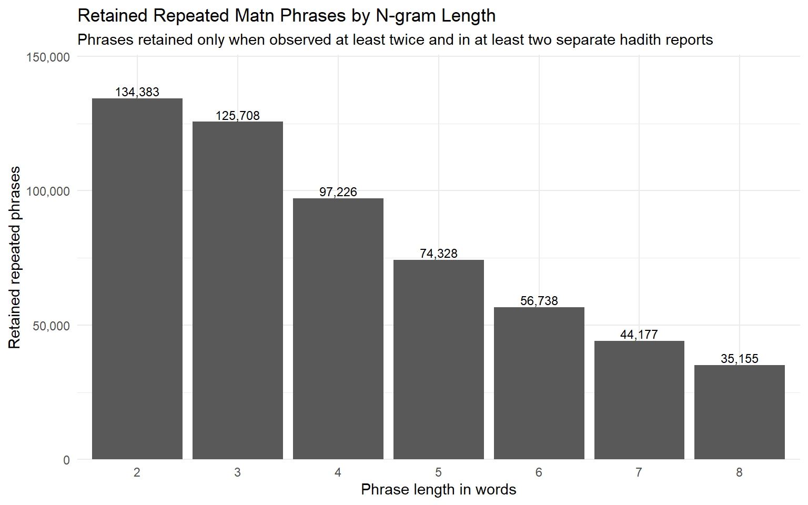

| Output | Description |
|---|---|
| kanz_04b_repeated_matn_phrases_all | Master table of all retained repeated phrases from 2-word through 8-word expressions. |
| kanz_04b_repeated_2grams | Review table containing repeated two-word phrases. |
| kanz_04b_repeated_3grams | Review table containing repeated three-word phrases. |
| kanz_04b_repeated_4grams | Review table containing repeated four-word phrases. |
| kanz_04b_repeated_5grams | Review table containing repeated five-word phrases. |
| kanz_04b_repeated_6grams | Review table containing repeated six-word phrases. |
| kanz_04b_repeated_7grams | Review table containing repeated seven-word phrases. |
| kanz_04b_repeated_8grams | Review table containing repeated eight-word phrases. |
| kanz_04b_hadith_repeated_phrase_hits | Hadith-level occurrences of every retained repeated phrase, including count within the hadith and matn context. |
| kanz_04b_run_summary | Overall processing summary, parameters, retained phrase counts, and output file locations. |
Repeated Matn Phrases
1 Script 04b — Repeated Matn Phrase Analysis
1.1 Purpose
Script 04b extends the lexical analyses of Script 04 by identifying repeated multi-word expressions occurring throughout the matn. Rather than relying on predefined phrase lists or manually curated formulae, the procedure discovers repeated expressions directly from the corpus using an unsupervised n-gram approach. This allows recurring language to emerge naturally from the text itself and provides a quantitative basis for investigating formulaic expression in Kanz al-Ummāl.
Unlike Script 04, which counts a predefined set of devotional formulae, Script 04b discovers repeated language empirically from the corpus itself. Together, the two scripts provide complementary approaches: one hypothesis-driven and one data-driven.
1.2 Outputs
The script generates the following analytical products. Separate phrase-length files are intentionally produced because they are easier to inspect manually than a single large review table.
The master repeated-phrase table, hadith-level phrase-hit table, and run summary are also mirrored into DuckDB as:
kanz_04b_repeated_matn_phrases_allkanz_04b_hadith_repeated_phrase_hitskanz_04b_run_summary
2 Phrase Discovery at a Glance
| Measure | Value |
|---|---|
| Hadith records loaded | 46,623 |
| Rows processed | 46,623 |
| Rows with matn | 43,846 |
| Rows with matn (%) | 94.0% |
| Minimum n-gram length | 2 |
| Maximum n-gram length | 8 |
| Minimum corpus count | 2 |
| Minimum hadith count | 2 |
| Unique candidate phrases | 6,009,654 |
| Retained repeated phrases | 567,715 |
| Retained repeated phrases (%) | 9.4% |
| Hadith phrase-hit rows | 2,071,563 |
NoteKey finding
Script 04b demonstrates that the current corpus can support data-driven discovery of recurring language. The analysis does not begin with a predefined list of formulae; instead, it identifies repeated phrases directly from the matn and then organizes them into reviewable files by phrase length.
3 Preliminary Results
Script 04b examined 43,846 matn-bearing reports and generated contiguous word sequences from 2-word through 8-word phrases. To reduce noise, a phrase was retained only if it occurred at least 2 times in the corpus and appeared in at least 2 separate hadith reports.
The analysis produced 6,009,654 unique candidate phrases before filtering and retained 567,715 repeated phrases for review. These retained phrases generated 2,071,563 hadith-level phrase-hit rows, allowing each recurring expression to be traced back to the reports in which it appears.
4 Retained Phrases by N-gram Length

| Phrase length | Retained repeated phrases |
|---|---|
| 2-gram | 134,383 |
| 3-gram | 125,708 |
| 4-gram | 97,226 |
| 5-gram | 74,328 |
| 6-gram | 56,738 |
| 7-gram | 44,177 |
| 8-gram | 35,155 |
The retained-phrase counts decline as phrase length increases. This is expected: short two-word and three-word sequences are common because they often reflect ordinary grammatical or lexical combinations, whereas longer repeated phrases are more selective and more likely to represent recognizable formulae, stock expressions, or recurring narrative patterns.
5 Example: Repeated 2-grams
Two-word repeated phrases provide a broad view of recurring lexical pairings and common grammatical combinations. Many are expected to be frequent and general, but they help establish the lower-level texture of the corpus and provide a starting point for later collocation analysis.
| Phrase | Corpus count | Hadith count | Example hadith numbers |
|---|---|---|---|
| رسول الله | 11,422 | 6,890 | 6 | 15 | 16 | 18 | 21 | 24 | 30 | 36 | 38 | 40 | 41 | 116 | 122 | 124 | 125 | 129 | 138 | 140 | 141 | 142 | 145 | 146 | 148 | 162 | 171 |
| عن ابي | 3,037 | 2,973 | 14 | 39 | 45 | 76 | 132 | 160 | 161 | 184 | 194 | 200 | 301 | 405 | 417 | 485 | 507 | 572 | 639 | 670 | 697 | 714 | 723 | 742 | 795 | 820 | 825 |
| عن ابن | 2,500 | 2,461 | 23 | 39 | 148 | 175 | 186 | 194 | 251 | 289 | 445 | 558 | 631 | 670 | 793 | 830 | 901 | 1024 | 1030 | 1074 | 1119 | 1181 | 1192 | 1332 | 1355 | 1365 | 1380 |
| يا رسول | 2,341 | 1,884 | 125 | 146 | 199 | 206 | 210 | 589 | 754 | 783 | 829 | 864 | 867 | 928 | 946 | 957 | 992 | 998 | 1004 | 1053 | 1080 | 1081 | 1118 | 1129 | 1198 | 1243 | 1275 |
| يوم القيامه | 2,111 | 1,931 | 109 | 110 | 119 | 121 | 133 | 138 | 139 | 151 | 179 | 184 | 233 | 286 | 287 | 288 | 292 | 293 | 294 | 330 | 342 | 364 | 428 | 539 | 559 | 569 | 575 |
| عبد الله | 1,994 | 1,620 | 10 | 277 | 324 | 330 | 465 | 477 | 756 | 776 | 782 | 799 | 945 | 1011 | 1085 | 1368 | 1379 | 1400 | 1413 | 1414 | 1419 | 1420 | 1421 | 1426 | 1427 | 1431 | 1440 |
| الله تعالي | 1,848 | 1,677 | 30 | 100 | 109 | 127 | 158 | 181 | 220 | 235 | 236 | 252 | 253 | 262 | 285 | 287 | 288 | 335 | 336 | 388 | 421 | 482 | 483 | 498 | 519 | 527 | 584 |
| بن الخطاب | 1,845 | 1,736 | 1355 | 1358 | 1384 | 1414 | 1415 | 1431 | 1433 | 1444 | 1466 | 1469 | 1487 | 1488 | 1498 | 1500 | 1502 | 1543 | 1550 | 1583 | 1606 | 1622 | 1629 | 1631 | 1632 | 1655 | 1673 |
| عن علي | 1,829 | 1,814 | 59 | 421 | 719 | 782 | 828 | 1360 | 1361 | 1362 | 1370 | 1371 | 1372 | 1426 | 1434 | 1475 | 1552 | 1553 | 1555 | 1556 | 1557 | 1558 | 1562 | 1567 | 1594 | 1597 | 1598 |
| عمر بن | 1,808 | 1,711 | 1355 | 1358 | 1384 | 1414 | 1415 | 1431 | 1433 | 1444 | 1466 | 1469 | 1487 | 1488 | 1498 | 1500 | 1502 | 1543 | 1550 | 1583 | 1606 | 1622 | 1624 | 1629 | 1631 | 1632 | 1650 |
| ان الله | 1,463 | 1,390 | 66 | 109 | 143 | 145 | 146 | 257 | 261 | 262 | 270 | 285 | 292 | 300 | 323 | 347 | 348 | 363 | 445 | 510 | 511 | 519 | 528 | 529 | 530 | 531 | 532 |
| الله بن | 1,430 | 1,217 | 477 | 756 | 776 | 782 | 945 | 1011 | 1085 | 1379 | 1400 | 1413 | 1419 | 1420 | 1421 | 1431 | 1442 | 1451 | 1458 | 1473 | 1483 | 1497 | 1505 | 1525 | 1533 | 1536 | 1539 |
| بن ابي | 1,349 | 1,201 | 793 | 1370 | 1387 | 1389 | 1422 | 1430 | 1476 | 1481 | 1496 | 1525 | 1536 | 1539 | 1567 | 1568 | 1570 | 1571 | 1597 | 1623 | 1650 | 1663 | 1675 | 1727 | 1736 | 1746 | 2794 |
| علي قال | 1,207 | 1,197 | 782 | 1360 | 1361 | 1362 | 1371 | 1434 | 1475 | 1552 | 1553 | 1555 | 1556 | 1562 | 1594 | 1598 | 1607 | 1612 | 1638 | 1640 | 1641 | 1645 | 1647 | 1649 | 1651 | 1652 | 1653 |
| ابن عباس | 1,205 | 1,107 | 23 | 39 | 175 | 186 | 289 | 445 | 558 | 631 | 1074 | 1119 | 1181 | 1395 | 1396 | 1494 | 1496 | 1539 | 1589 | 1590 | 1623 | 1668 | 1674 | 1683 | 1744 | 1853 | 1897 |
| قال قال | 1,154 | 1,150 | 465 | 1362 | 1380 | 1390 | 1407 | 1413 | 1428 | 1432 | 1437 | 1438 | 1443 | 1444 | 1449 | 1477 | 1492 | 1538 | 1540 | 1544 | 1550 | 1555 | 1587 | 1591 | 1592 | 1593 | 1600 |
| ابو بكر | 1,139 | 863 | 875 | 1404 | 1405 | 1409 | 1411 | 1412 | 1428 | 1429 | 1430 | 1431 | 1443 | 1479 | 1480 | 1482 | 1499 | 1538 | 1539 | 1540 | 1560 | 1572 | 1696 | 3316 | 3951 | 3991 | 4031 |
| عمر قال | 1,113 | 1,105 | 1355 | 1356 | 1357 | 1367 | 1369 | 1380 | 1417 | 1479 | 1483 | 1485 | 1486 | 1489 | 1522 | 1523 | 1537 | 1544 | 1545 | 1549 | 1551 | 1576 | 1591 | 1618 | 1626 | 1627 | 1628 |
| ثم قال | 1,107 | 858 | 175 | 520 | 572 | 597 | 1256 | 1298 | 1355 | 1363 | 1368 | 1382 | 1464 | 1466 | 1502 | 1525 | 1543 | 1547 | 1553 | 1561 | 1576 | 1608 | 1625 | 1655 | 1670 | 1686 | 1702 |
| عن عمر | 1,063 | 1,060 | 111 | 194 | 516 | 917 | 1356 | 1357 | 1358 | 1359 | 1367 | 1369 | 1417 | 1433 | 1484 | 1485 | 1486 | 1488 | 1489 | 1544 | 1545 | 1546 | 1547 | 1549 | 1550 | 1551 | 1604 |
6 Example: Repeated 5-grams
Five-word repeated phrases are often more interpretable than two-word phrases because they are long enough to capture formulaic wording or recurring narrative language. For a non-specialist reader, the 5-gram table is therefore a useful bridge between raw frequency counting and the study of formulaic expression.
| Phrase | Corpus count | Hadith count | Example hadith numbers |
|---|---|---|---|
| ان لا اله الا الله | 316 | 283 | 6 | 16 | 18 | 20 | 21 | 23 | 24 | 27 | 28 | 29 | 30 | 31 | 36 | 38 | 39 | 40 | 41 | 43 | 80 | 109 | 110 | 111 | 112 | 116 | 122 |
| اشهد ان لا اله الا | 139 | 116 | 24 | 36 | 109 | 110 | 116 | 136 | 138 | 139 | 140 | 148 | 233 | 1373 | 1421 | 1462 | 1736 | 2612 | 3517 | 3589 | 3724 | 3734 | 3878 | 3898 | 4947 | 4950 | 12110 |
| لا اله الا الله وحده | 133 | 123 | 39 | 111 | 118 | 139 | 160 | 166 | 204 | 207 | 277 | 377 | 1359 | 1363 | 1417 | 1491 | 1905 | 2048 | 3488 | 3517 | 3523 | 3524 | 3525 | 3526 | 3527 | 3528 | 3529 |
| الله وحده لا شريك له | 132 | 126 | 111 | 118 | 139 | 166 | 204 | 1359 | 1363 | 1417 | 1491 | 1905 | 2048 | 3488 | 3517 | 3523 | 3524 | 3525 | 3526 | 3527 | 3528 | 3529 | 3531 | 3532 | 3534 | 3535 | 3572 |
| اله الا الله وحده لا | 130 | 124 | 111 | 118 | 139 | 166 | 204 | 1359 | 1363 | 1417 | 1491 | 1905 | 2048 | 3488 | 3517 | 3523 | 3524 | 3525 | 3526 | 3527 | 3528 | 3529 | 3531 | 3532 | 3534 | 3535 | 3572 |
| الا الله وحده لا شريك | 129 | 123 | 111 | 118 | 139 | 166 | 204 | 1359 | 1363 | 1417 | 1491 | 1905 | 2048 | 3488 | 3517 | 3523 | 3524 | 3525 | 3526 | 3527 | 3528 | 3529 | 3531 | 3532 | 3534 | 3535 | 3572 |
| حول ولا قوه الا بالله | 124 | 123 | 1951 | 1952 | 1953 | 1954 | 1955 | 1956 | 1957 | 1958 | 1959 | 1960 | 1961 | 1962 | 1963 | 1964 | 1965 | 1966 | 1967 | 1968 | 1969 | 1970 | 1971 | 1972 | 1973 | 1974 | 1975 |
| اللهم اني اعوذ بك من | 101 | 95 | 3330 | 3572 | 3583 | 3609 | 3618 | 3619 | 3622 | 3628 | 3631 | 3634 | 3637 | 3641 | 3642 | 3649 | 3651 | 3666 | 3669 | 3670 | 3671 | 3681 | 3687 | 3688 | 3689 | 3690 | 3693 |
| قال لا اله الا الله | 99 | 84 | 118 | 120 | 126 | 132 | 134 | 143 | 148 | 155 | 159 | 166 | 169 | 180 | 183 | 201 | 202 | 203 | 204 | 205 | 206 | 207 | 208 | 209 | 210 | 219 | 229 |
| علي قال قال رسول الله | 93 | 93 | 1555 | 1612 | 1652 | 4029 | 4030 | 4074 | 4075 | 4440 | 4460 | 4547 | 4614 | 4642 | 4675 | 4704 | 4718 | 4883 | 5056 | 5063 | 8412 | 8512 | 8619 | 8659 | 8808 | 8811 | 8887 |
| عن علي قال قال رسول | 92 | 92 | 1555 | 1612 | 1652 | 4029 | 4030 | 4074 | 4075 | 4440 | 4460 | 4547 | 4614 | 4642 | 4675 | 4704 | 4718 | 4883 | 5056 | 5063 | 8412 | 8512 | 8619 | 8659 | 8808 | 8811 | 8887 |
| الخرايطي في مكارم الاخلاق عن | 88 | 88 | 95 | 107 | 756 | 3237 | 3360 | 3426 | 3433 | 3518 | 3568 | 3795 | 3799 | 3852 | 5134 | 5190 | 5196 | 5206 | 5211 | 5219 | 5224 | 5242 | 5243 | 5456 | 5457 | 5461 | 5718 |
| لا اله الا الله وان | 86 | 83 | 6 | 18 | 20 | 21 | 28 | 29 | 30 | 38 | 40 | 110 | 129 | 148 | 156 | 162 | 195 | 198 | 199 | 215 | 217 | 225 | 233 | 365 | 374 | 434 | 957 |
| اله الا الله وان محمدا | 85 | 82 | 6 | 18 | 20 | 21 | 28 | 29 | 30 | 38 | 40 | 110 | 129 | 148 | 156 | 162 | 195 | 198 | 199 | 215 | 217 | 225 | 233 | 365 | 374 | 434 | 957 |
| وهو علي كل شيء قدير | 84 | 84 | 2022 | 2048 | 3040 | 3488 | 3523 | 3524 | 3525 | 3526 | 3527 | 3528 | 3529 | 3531 | 3532 | 3534 | 3535 | 3576 | 3579 | 3586 | 3590 | 3591 | 3603 | 3604 | 3721 | 3722 | 3725 |
| قال قال عمر بن الخطاب | 82 | 82 | 1730 | 4018 | 4094 | 4179 | 4228 | 4289 | 4523 | 4636 | 8481 | 8689 | 8815 | 8888 | 8898 | 8934 | 8939 | 8945 | 8946 | 8979 | 9854 | 10093 | 10095 | 11460 | 11494 | 11652 | 11670 |
| قال سمعت رسول الله يقول | 81 | 80 | 1415 | 1422 | 1571 | 1580 | 1653 | 1673 | 1684 | 1688 | 4926 | 4928 | 4972 | 4980 | 5017 | 5058 | 5077 | 8421 | 8447 | 8678 | 8779 | 8782 | 8840 | 11340 | 11502 | 12395 | 12417 |
| اله الا الله والله اكبر | 77 | 72 | 1798 | 1909 | 1963 | 1989 | 1990 | 1993 | 1995 | 1999 | 2000 | 2002 | 2003 | 2004 | 2005 | 2008 | 2011 | 2012 | 2015 | 2020 | 2023 | 2024 | 2025 | 2028 | 2031 | 2032 | 2033 |
| ان عمر بن الخطاب كان | 74 | 74 | 1384 | 4103 | 4231 | 4817 | 5043 | 8608 | 8827 | 11418 | 11419 | 11462 | 11470 | 11471 | 11516 | 12517 | 12656 | 12745 | 12752 | 13429 | 13597 | 13668 | 13977 | 15357 | 15554 | 16868 | 16892 |
| شريك له له الملك وله | 74 | 74 | 2022 | 2048 | 3488 | 3523 | 3524 | 3525 | 3526 | 3527 | 3528 | 3531 | 3532 | 3534 | 3535 | 3572 | 3576 | 3579 | 3582 | 3586 | 3590 | 3591 | 3603 | 3604 | 3721 | 3722 | 3725 |
7 Cross-Length Examples
The table below shows the highest-frequency examples across phrase lengths. It is intended as a quick inspection table rather than a complete inventory. The complete review files should be used for detailed phrase evaluation.
| Phrase length | Phrase | Corpus count | Hadith count |
|---|---|---|---|
| 2-gram | رسول الله | 11,422 | 6,890 |
| 2-gram | عن ابي | 3,037 | 2,973 |
| 2-gram | عن ابن | 2,500 | 2,461 |
| 2-gram | يا رسول | 2,341 | 1,884 |
| 2-gram | يوم القيامه | 2,111 | 1,931 |
| 3-gram | يا رسول الله | 2,312 | 1,865 |
| 3-gram | عمر بن الخطاب | 1,722 | 1,641 |
| 3-gram | عبد الله بن | 1,253 | 1,103 |
| 3-gram | عن علي قال | 1,139 | 1,139 |
| 3-gram | لا اله الا | 936 | 757 |
| 4-gram | لا اله الا الله | 772 | 627 |
| 4-gram | عن عبد الله بن | 560 | 554 |
| 4-gram | قال قال رسول الله | 531 | 530 |
| 4-gram | عن ابن عباس قال | 471 | 471 |
| 4-gram | ان عمر بن الخطاب | 408 | 405 |
| 5-gram | ان لا اله الا الله | 316 | 283 |
| 5-gram | اشهد ان لا اله الا | 139 | 116 |
| 5-gram | لا اله الا الله وحده | 133 | 123 |
| 5-gram | الله وحده لا شريك له | 132 | 126 |
| 5-gram | اله الا الله وحده لا | 130 | 124 |
| 6-gram | الا الله وحده لا شريك له | 129 | 123 |
| 6-gram | اله الا الله وحده لا شريك | 129 | 123 |
| 6-gram | اشهد ان لا اله الا الله | 128 | 105 |
| 6-gram | لا اله الا الله وحده لا | 121 | 115 |
| 6-gram | عن علي قال قال رسول الله | 92 | 92 |
| 7-gram | اله الا الله وحده لا شريك له | 129 | 123 |
| 7-gram | لا اله الا الله وحده لا شريك | 120 | 114 |
| 7-gram | ان لا اله الا الله وان محمدا | 82 | 80 |
| 7-gram | الا الله وحده لا شريك له له | 74 | 74 |
| 7-gram | لا شريك له له الملك وله الحمد | 74 | 74 |
| 8-gram | لا اله الا الله وحده لا شريك له | 120 | 114 |
| 8-gram | اله الا الله وحده لا شريك له له | 74 | 74 |
| 8-gram | الا الله وحده لا شريك له له الملك | 73 | 73 |
| 8-gram | الله وحده لا شريك له له الملك وله | 73 | 73 |
| 8-gram | وحده لا شريك له له الملك وله الحمد | 73 | 73 |
8 Interpretation
Unlike the manually curated devotional expressions counted in Script 04, this procedure makes no assumptions about which phrases are linguistically or religiously significant. Repeated language is discovered directly from the corpus itself. This distinction matters because recurrent expressions in hadith literature may include standard openings, narrative transitions, oaths, quotation formulae, supplications, and other conventional wording that would be difficult to enumerate exhaustively beforehand.
The separate review files organized by phrase length also support practical human inspection. Short phrases are useful for identifying common lexical and grammatical pairings, while longer repeated phrases are more likely to reveal complete formulaic expressions or stereotyped narrative patterns. The 2-gram and 5-gram examples therefore serve different purposes: the former gives a broad view of local word association, while the latter begins to expose more meaningful repeated language.
At the same time, these results should be interpreted as phrase candidates rather than final linguistic categories. Repetition alone does not prove that a phrase has a specific rhetorical, theological, or transmission function. The value of Script 04b is that it narrows the search space and produces an empirical phrase inventory that can be reviewed, classified, and reused in later analyses.
ImportantPractical implication
Script 04b turns the corpus into a source of candidate formulae. Rather than asking a reviewer to invent a phrase list from memory, the pipeline can surface repeated expressions automatically and then allow human reviewers to decide which ones are linguistically or religiously meaningful.
9 Building on These Results
The repeated-phrase inventory provides a foundation for several accessible computational linguistic extensions:
- Formulaic language discovery: identifying recurring expressions that appear across multiple hadith reports.
- Phrase dictionaries: building reviewable lists of repeated expressions for later annotation and classification.
- Collocation analysis: studying which words tend to occur together more often than expected.
- Narrative-pattern analysis: identifying repeated openings, transitions, quotations, and closing formulae.
- Stylometric comparison: measuring how formula density differs across subsets of the corpus.
- Search and retrieval: enabling phrase-based search rather than only single-word search.
- Corpus comparison: comparing repeated expressions in Kanz al-Ummāl with other hadith collections or Classical Arabic corpora.
- Machine-learning preparation: producing phrase-level features that can be used in clustering, topic discovery, or semantic modelling.
10 Summary Assessment
Script 04b is a proof-of-concept for data-driven formulaic language discovery in the preliminary Kanz al-Ummāl corpus. It does not solve the linguistic classification problem by itself, but it creates the empirical foundation needed for later classification. The result is a practical bridge between raw text extraction and higher-level computational linguistics: repeated language can now be found, counted, reviewed, and traced back to individual hadith reports.